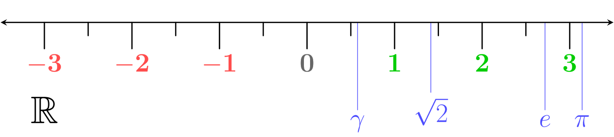

Luvut ja laskeminen
Contents
Luvut ja laskeminen#
Peruskoulun ensimmäiset vuodet olet luultavasti opiskellut hieman toisenlaista matematiikkaa kuin nyt olet opiskelemassa, nimeltään aritmetiikkaa. Aritmetiikka tarkoittaa yksinkertaistetusti sitä, että suoritetaan laskutoimituksia päässä, ruutupaperilla tai laskimella. Käytännössä voitaisiin vaikka laskea, paljonko 60 metriä pitkän ja 180 cm korkean aidan rakennuskustannukset kasvavat, jos aitalaudan hinta nousee 2 eurosta/metri 10 sentillä.
Algebrassa opetellaan käyttämään matematiikan sääntöjä yleisemmin. Tällöin vapaudutaan lukujen käytöstä. Voidaan laskea esimerkiksi, paljonko aidan hinta nousee, jos aitalaudan hinta nousee mistä tahansa alkuperäisestä arvosta minkä tahansa verran, sentteinä tai vaikka prosentteina.
Minulle on syksyisin ensimmäisillä oppitunteilla tullut sellainen vaikutelma, että monen opiskelijan on vaikea luopua numeroista. Algebrassa voidaan merkitä vaikka aidan pituutta kirjaimella \(x\), laudan hintaa kirjaimella \(y\), ja niin edelleen. Sitten vain kirjoitetaan tarpeelliset laskutoimitukset ja saadaan aikaan jokin lauseke, eli kirjaimien ja kenties muutamien numeroiden yhdistelmä, joka toimii muillekin kuin omaa pihaa kiertävälle aidalle. Tähän lausekkeeseen voidaan sitten sijoittaa sopivat lukuarvot, jos halutaan soveltaa lauseketta johonkin tiettyyn aitaan ja aitalautaan. Päästiinkin vähemmällä työllä!
Ennen kuin opetellaan käyttämään algebran työkaluja, kerrataan miten numeroilla lasketaan, sillä usein laskulle kuitenkin halutaan jokin lukuna esitettävä lopputulos. Millaisia lukuja on olemassa, ja miten niitä syötetään laskimeen?
Lukujoukot#
Kaikki luvut kuuluvat johonkin lukujoukkoon. Lisäksi lukujoukot ovat osa toisia, suurempia lukujoukkoja (paitsi tietysti kaikkein suurin eli kompleksilukujen joukko). Esimerkiksi luonnolliset luvut ovat osa kokonaislukujen joukkoa, ja kokonaisluvut taas voidaan esittää murtolukumuodossa eli rationaalilukuna. Seuraavassa taulukossa on esitetty yleisimmät lukujoukot ja esimerkkejä siitä, missä niiden jäseniä esiintyy.
Lukujoukko |
Sisältö |
Esimerkkejä |
|---|---|---|
Luonnolliset luvut \(\mathbb{N}\) |
positiiviset kokonaisluvut (myös 0) |
50 henkilöä ryhmässä |
Kokonaisluvut \(\mathbb{Z}\) |
positiiviset ja negatiiviset kokonaisluvut |
henkilöiden määrän muutos -2 |
Rationaaliluvut \(\mathbb{Q}\) |
murtoluvut, päättyvät ja jaksolliset desimaaliluvut |
\(\frac{1}{3}\), \(2.55\), \(0.973973\dots\) |
Irrationaaliluvut \(\mathbb{I}\) |
päättymättömät, jaksottomat desimaaliluvut |
\(\pi\), \(\sqrt{2}\) |
Reaaliluvut \(\mathbb{R}\) |
kaikki ylempien joukkojen luvut |
\(-18.2\), \(\frac{\pi}{2}\), jne. |
Kompleksiluvut \(\mathbb{C}\) |
reaaliluvut ja imaginaariluvut |
\(2+3i\) |
Huomautus rationaaliluvuista
Murtoluku eli kahden kokonaisluvun osa tuottaa laskimeen näppäiltynä tulokseksi aina joko päättyvän tai jaksollisen desimaaliluvun. Päättyvä luku yksinkertaisesti loppuu, kuten vaikka \(0.25\). Jaksollisessa desimaaliluvussa sama numerosarja toistuu äärettömän monta kertaa. Toistuva sarja ei välttämättä ala heti ensimmäisestä desimaalista, ja se voi olla hyvin pitkä. Kokeile laskea laskimella vaikkapa 7/23 tai 9/14. Löydätkö toistuvan sarjan? Lasku kannattaa kirjoittaa esimerkiksi WolframAlphaan, sillä taskulaskimen tai puhelimen laskinsovelluksen näyttötila saattaa loppua kesken.
Huomautus kompleksiluvuista
Kompleksilukuja käytetään paljon esimerkiksi värähtelyliikkeen ja virtapiirien mallinnuksessa, mutta tällä opintojaksolla niitä ei tarvita. Kompleksiluvut koostuvat ns. reaaliosasta ja imaginaariosasta. Imaginaariosan tunnistaa i-kirjaimesta. Esimerkiksi 2+3i on kompleksiluku, jonka reaaliosa on 2 ja imaginaariosa 3i. Kompleksiluvussa saattaa olla pelkkä imaginaariosakin, esimerkiksi \(4i\). Kompleksilukuja tulee vastauksena sellaisista laskutoimituksista, jotka eivät reaalilukujen laskusääntöjen mukaan ole mahdollisia. Kokeile laskea neliöjuuri jostain negatiivisesta luvusta, esimerkiksi \(\sqrt{-3}\).
Lukusuora#
Reaaliluvuilla (toisin kuin kompleksiluvuilla) on sellainen ominaisuus, että ne voidaan asetella suuruusjärjestykseen. Peräkkäin järjestykseen asetetut luvut muodostavat lukusuoran. Se on kuin kyljelleen käännetty lämpömittari. Lukusuoralle voidaan merkitä näkyviin joitakin lukuja, mutta ei kaikkia, sillä niitä on äärettömän monta. Pelkästään esimerkiksi lukujen \(1.0\) ja \(1.1\) väliin mahtuu äärettömän monta lukua. Kuvan lukusuora on peräisin Wikipediasta.

Lukusuoran avulla voidaan hahmottaa pari tärkeää reaalilukuihin liittyvää käsitettä:
Vastaluku
Luvun \(a\) vastaluku sijaitsee lukusuoralla yhtä kaukana nollasta kuin \(a\), mutta vastakkaisella puolella nollaa. Luvun \(a\) vastaluku saadaan aina laskemalla \(-a\). Esimerkkejä:
Luvun \(17.5\) vastaluku on \(–17.5\)
Luvun \(–5.3\) vastaluku on \(–(–5.3) = 5.3\)
Luvun \((a+8)\) vastaluku on \(–(a+8) = –a–8\)
Luvun \((3-a)\) vastaluku on \(–(3-a) = -3-(-a)=-3+a=a-3\)
Kaksi viimeistä esimerkkiä toimivat riippumatta siitä, mikä luku on \(a\)-kirjaimen paikalla. Kokeile esimerkiksi sijoittaa \(a=5\).
Itseisarvo
Luvun \(a\) itseisarvo \(|a|\) kuvaa sitä, kuinka kaukana nollasta luku \(a\) on lukusuoralla, kummalla tahansa puolella nollaa. Esimerkiksi -30 asteen pakkasella ja 30 asteen helteellä lämpötilaa kuvaavan luvun itseisarvo on sama. Luvun \(a\) paikalla voi olla myös jokin laskutoimitus. Itseisarvo lasketaan seuraavilla säännöillä:
\(|a|=a\), jos \(a > 0\), esimerkiksi: \(|85-3|=|82|=82\)
\(|a|= –a\), jos \(a < 0\), esimerkiksi: \(|3-7|=|-4|=-(-4)=4\)
Lisäksi lukusuoraan liittyvät lukuvälit, joita merkitään seuraavasti:
“\(x\) on suurempi kuin \(y\)”: \(x>y\)
“\(x\) on suurempi tai yhtä suuri kuin \(y\): \(x \geq y\)
“\(x\) on pienempi kuin \(y\)”: \(x<y\)
“\(x\) on pienempi tai yhtä suuri kuin \(y\): \(x \leq y\)
“\(x\) kuuluu lukujoukkoon, jonka pienin luku on \(a\) ja suurin luku on \(b\)”: \(a \leq x \leq b\) tai \(x \in [a,b]\)
“\(x\) kuuluu lukujoukkoon, jonka alaraja \(a\) ja yläraja \(b\) eivät kuulu kyseiseen joukkoon”: \(a<x<b\) tai \(x \in ]a,b[\)
“\(x\) kuuluu reaalilukujen joukkoon ilman mitään rajoituksia”: \( \in \Re\)
Ehtoja voi myös yhdistellä, esimerkiksi “luku \(x\) on suurempi tai yhtä suuri kuin \(-3\), mutta pienempi kuin \(4\)” merkitään joko \(-3 \leq x < 4\) tai \(x \in [-3,4[\).
Laskemisen sääntöjä#
Lauseke on näkyviin merkitty laskutoimitus, esimermkiksi 2+3. Lausekkeelle voidaan laskea jokin arvo, esimerkiksi 2+3=5. Tätä varten lauseke pitää syöttää oikealla tavalla laskimeen. Lausekkeen sieventäminen eli muokkaaminen yksinkertaisempaan muotoon ei muuta lausekkeen arvoa. Kerrataan sieventämisestä aluksi merkkisäännöt.
Merkkisäännöt
Itseisarvon yhteydessä tarvittiin jo miinusmerkkejä. Niin lukuja kuin kirjaimiakin sisältävissä laskutoimituksissa pitää noudattaa seuraavia merkkisääntöjä:
kertolaskussa parillinen määrä miinuksia kumoaa toisensa, mutta pariton määrä ei
vähennyslaskussa kaksi miinusmerkiä kumoaa toisensa
jakolaskussa tulos on positiivinen, jos jaettavan ja jakajan merkit ovat samat, muulloin negatiivinen
Esimerkkejä:
\(-2\cdot(-5)=10\), mutta \(-2\cdot 5 = -10\)
\(-3 \cdot x = -3x\), mutta \(-3\cdot(-x)=3x\)
\(5-2=3\), mutta \(5-(-2)=5+2=7\)
\(x-5\) on vain \(x-5\), mutta \(x-(-5)\) voidaan kirjoittaa lyhyemmin \(x+5\)
\(\frac{8}{4}=2\), mutta \(\frac{-8}{4}=-2\) ja \(\frac{-8}{-4}=2\)
Laskujärjestys
Lausekkeen sisältämät laskutoimitukset pitää laskea seuraavassa järjestyksessä:
sulut, sisimmistä aloittaen
potenssilaskut ja juuret
kerto-ja jakolaskut vasemmalta oikealle
yhteen- ja vähennyslaskut
Jakomerkkinä voi käyttää / tai : tai ÷, ja kertomerkkinä * tai käsin kirjoitettaessa \(\cdot\). Esimerkkejä:
a) \(18+6/2+4=18+3+4=25\)
b) \((18+6)/(2+4)=24:6=4\)
c) \(28/2\cdot 7=14 \cdot 7=98\)
Sulkujen lisääminen ei tee laskutoimituksesta väärää, päinvastoin sulut voivat selkeyttää merkintää. Esimerkiksi \(28:2:7\) on kyllä laskujärjestyksen mukaisesti \(14:7=2\), mutta selkeämmin sitä voisi merkitä \((28:2):7=14:7=2\).
Laskinta käytettäessä ole tarkkana sulkujen kanssa mm. jakolaskuissa, joissa joko jaettava tai jakajana on muun laskutoimituksen lopputulos. Laskimelle pitää sulkujen avulla kertoa, mitä kaikkea jaetaan, ja millä kaikella jaetaan. Esimerkiksi lasku \(100/(4+1)\) on aivan eri asia kuin \(100/4+1\).